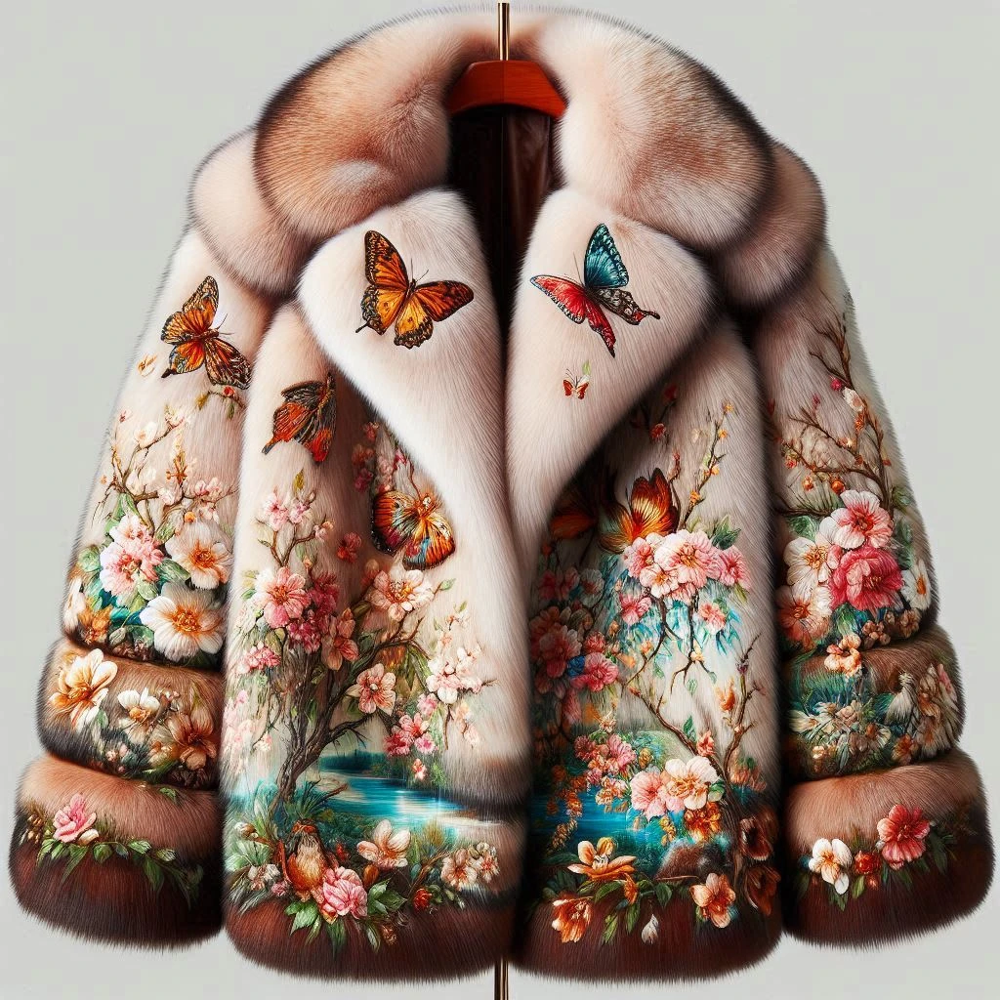

Производство
Все начиналось с любви
Изделия Ansé с 2011 года создаются в Санкт-Петербурге, на собственном производстве. Именно в этом городе мы начали одними из первых говорить об экомехе, как о лучшей альтернативе шубам из животных.
Благодаря любви к жизни, бренд Anse появился во главе с основательницей Марией Кошкиной и её родителями: Аллой и Владимиром. Сейчас Ansé - два цеха по производству верхней одежды преимущественно из экомеха на любой сезон. Все изделия создаются исключительно вручную и ежедневно проходят контроль качества.
Любовь к жизни

«В 2023 году было ровно 12 лет с момента аварии, после которой врачи дали мне 15% на выживание»
Мои первые шаги как предпринимателя были связаны не с Anse. Свою первую компанию я основала с моим молодым человеком. Все шло успешно - мы закупили материалы и выпустили первую шубу - пока не произошла авария.
Я с молодым человеком ехали из кино, и в нас врезался пьяный водитель «Тойоты». Он погиб на месте, мой парень, слава Богу, не пострадал. Скорую помощь вызвал проезжающий мимо человек, которого я так никогда и не видела, но именно благодаря ему осталась жива. В тот вечер мой парень забрал из моей квартиры все лекала, удалил меня из группы «Вконтакте» и полностью перевел работу нашего бренда на себя, не боясь последствий, — ведь мы не успели юридически зарегистрировать фирму. Хотя, может, он просто подумал, что я не выживу.
Мама нашла меня случайно по месту аварии — я не отвечала на звонки, она стала беспокоиться и решила проехать по нашему маршруту. В реанимацию меня везли с травмами, не совместимыми с жизнью, — 6 переломами, сильным левосторонним инсультом и черепно-мозговой травмой. В коме я провела 23 дня.
После комы я заново училась ходить, говорить и быть предпринимателем. Бренд Anse был основан спустя год после аварии.
Этим коллажом я просто хочу напомнить вам, что очень многое можно изменить к лучшему, главное верить и не сдаваться. Иногда нужно много времени - например реабилитацию я продолжаю до сих пор.
– Мария Кошкина, основатель Anse
Почему всё получилось?

Мария Кошкина, основатель
Владимир
Алла, руководитель
За 12 лет нам удалось доказать, что можно получать от верхней одежды больше, чем просто удовольствие. Мы увидели, что она помогает женщинам раскрывать их индивидуальность и делает увереннее. Более 4000 фото-отзывов в нашей группе Вконтакте доказывают это.
Благодаря доверию клиентов, поддержке семьи и преданности к любимому делу, мы выросли во флагманский магазин в центре Петербурга и комьюнити из более 50 000 клиентов. Сейчас вы видите результат совместного труда и большой истории, место в которой есть каждому из вас.
13 лет на рынке
- 2011
- маленькое ателье
- небольшой шоу-рум в офисном здании
- первые клиенты и непонимание экошуб в качестве полноценной верхней одежды
- работа с белорусским мехом (более лучшего аналога на тот момент не было)
- 2024

- собственное производство с большой командой
- магазин в самом центре Петербурга
- более 50 000 женщин благодаря нам выбрали носить мех независимо от сезона
- работа с премиальным корейским мехом, который используют популярные дома мод (DIOR, BALENCIAGA и тд)
Мы не остановились на шубах
Мы первые в России предложили носить мех круглый год

- 